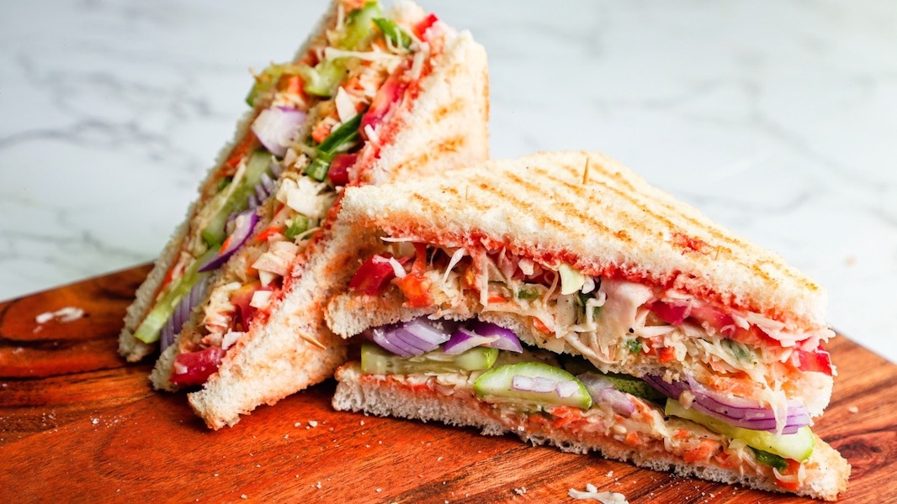

Veg Club Sandwich

Description
Veg club sandwich
Ingredients
For Stuffing
- 2 cups cabbage shredded
- 1 cup capsicum sliced
- 1 cup carrot shredded
- 4 tbsp. mayonnaise
- 1/2 tsp. salt
- 1/2 tsp. black pepper
For Sandwich
- 3 pieces white bread
- 1 + 1 tbsp. tomato ketchup
- 1 onion sliced
- 1 cucumber sliced
- 1 tomato sliced
- shredded cabbage as required
- 1 tbsp. mayonnaise
Steps
For Stuffing
- Add cabbage, capsicum, carrot, mayonnaise, salt and pepper to a bowl.
- Mix everything well and keep it aside.
For sandwich
- Take 3 slices of white bread and cut the sides of the bread.
- Grill the bread slices.
- Spread 1 tbsp ketchup evenly on one slice of bread.
- Add prepared stuffing to the bread. Also add sliced cucumber and onions.
- Cover with another bread slice and add more stuffing on the bread.
- Add sliced tomatoes and cabbage on top.
- Take one more slice of bread and spread ketchup and mayonnaise on it.
- Cover sandwich with this bread slice and insert some toothpicks in the corner
- Cut the sandwich in half.
- Serve
Home